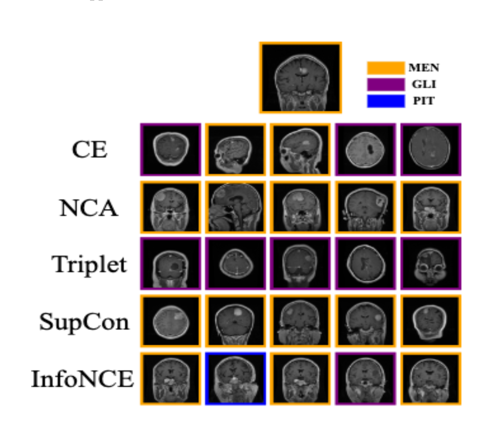
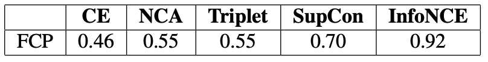
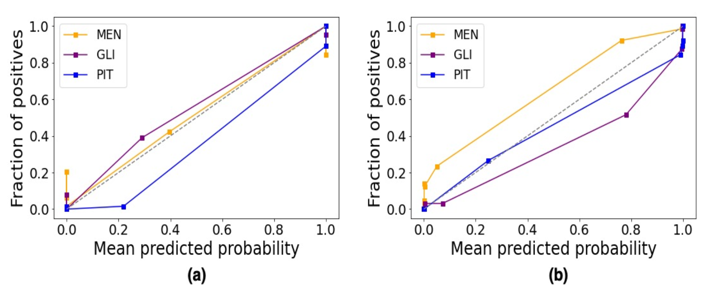
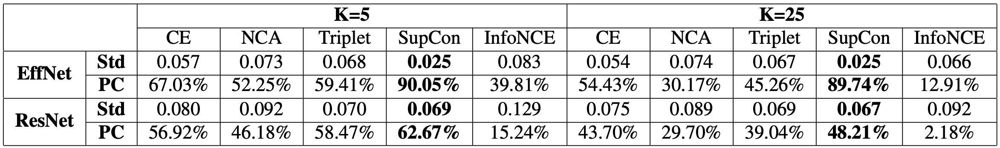

AI - Content Based Image Retrieval (AI-CBIR) to Guide Brain Tumor Diagnosis
Pranav Manjunath, MS1; Brian Lerner, BS2; Timothy Dunn, PhD1,2
1Dept. Of Biomedical Engineering, Duke University; 2Dept. Of Electrical and Computer Engineering, Duke University

Brain tumor top 5 retrievals. For the reference test image (top), each row specifies
the 5 nearest neighbors generated by the EfficientNet loss function variants. MEN: Meningioma, GLI: Glioma, PIT: Pituitary.

Fraction of Correct Planes averaged on the entire
test MRI dataset for top 5 retrievals. Model Architecture: EffNet.
FCP represents the proportion of neighbors that share the same plane as a test image,
averaged across the test set. A higher FCP means that a majority of neighbors are of
the same plane as the reference image, and vice versa.

Classification Performance - Average Cohen Kappa Stat (A-CK) and Ensemble Cohen Kappa Stat (E-CK). CE, NCA, Triplet (TP),
SupCon (S.Con), and InfoNCE (INCE) indicate the Deep-KNN variants for both EfficientNet (EffNet) and ResNet. MLP represents
the traditional EffNet and ResNet based classifier. All values are derived from 5 trials of each model.

Calibration Plots for (a) EfficientNet trained on SupCon (b) Traditional CNN based Classification - EfficientNet

AUROCs on EffNet when (classification) K=25.

Neighborhood Consistency (NC) - Std: Standard Deviation and PC: Proportion Correct.